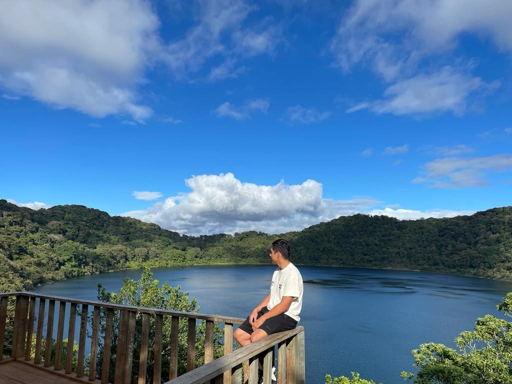

MI BIOGRAFIA
Aqui les voy a comentar sobre mi biografia


MI BIOGRAFIA
Biografia
Andres Andhu Flores Hernandez Naci en el hospital san Juan de Dios luego fui creciendo hasta los 5 años de edad comence a estudiar lo
que fue la preprimaria la estube estudiando en una escuela que se llama anita figeroa luego me escribi a la primaria que estube cursando desde primero a sexto grado en una
escuela llamda 25 de julio en esa escuela nos llevaron a una escursion de deportes el cual fuimos a ver todos los deportes que existes por ejemplo boxeo, karate do, lucha
olympica, damas, basquet etc.... luego me escribi en boxeo porque en esa
escurcion nos dieron a elegir un deporte y yo me meti a boxeo el boxeo es un deporte duro de contacto
individual, y despues logre sacar mis estudios de primaria y entre a
basicos en el cual estudi desde primero basico a 3 basico en un instituto llamado tecun luego de sacar
mi 3 basicos me meti a kinal.